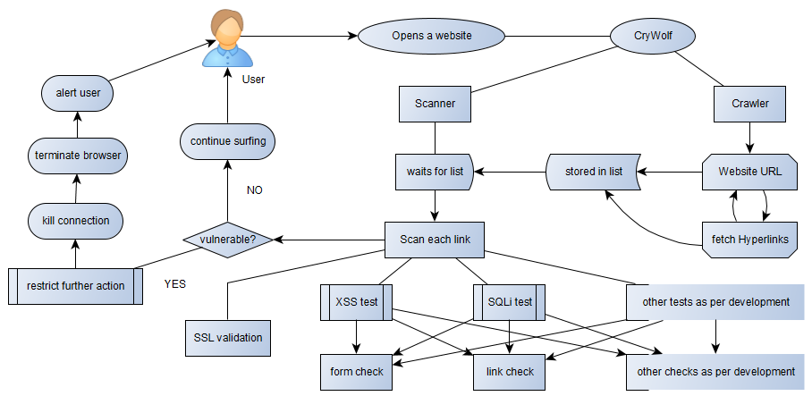
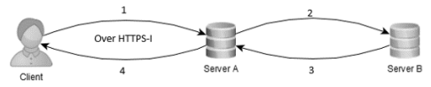
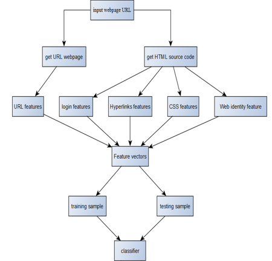

×Pro Lens[2023]I developed a computer vision application using Flutter and machine learning. The app scans objects through the device's camera, identifies them using YOLOv8, and opens related user manuals. It was a rewarding experience in mobile app development and computer vision.
×Live Weapon Detection[2022]The structure developed is based on a usual website crawler that in general would just be fetching all the hyperlinks and reference to and from that website, on the top of it, a dynamic accessor has been formed to test these links on separate basis for various possible ways of compromises, which can be further appended based on the needs and wants of the user. And taking the suggestion from the Cranor’s work the usability ratio of the warning has been tried to improve for better user understanding and keep them away from such malicious weblinks as shown in the figure below.

The scanner executes to firstly validate the SSL certificate of these links prior to any further action. Once the SSL certificate is verified the tests are performed on each of the links and forms on the website, and without any further delay in case of a vulnerable area the alert is sent to the user with a virtually developed method of warning the user, on the side of which the code itself works to take the user to safer platform by both closing the current browser, raising a proper alert formed with keeping usability ratio in mind and allowing user to either learn more about the issue or close the same, while on the other hand if no issues are found user are allowed a proper safe surfing.
×Deepfake Detection[2022]In my deepfake detection project, I utilized an ensemble technique, combining InceptionV2 and Xception deep learning models. These models were trained on a diverse dataset of deepfake and authentic videos, and their predictions were combined to effectively identify and differentiate deepfake videos with an accuracy of 98%.
×Real Estate Database Management System[2020]The currently used HTTPS communication protocols is called the secure version of HTTP using the SSL certificates, which on itself relies on Diffie-Hellman key exchange, making the bypassing of the same pretty easy as shown in implementation. Few of the top websites having a high request percentage on daily basis have started using HSTS where the website is forced to interact over HTTPS connections helping them from the downgrade attack, still these websites are vulnerable to spoof attack, with adversary personifying themselves as the legitimate website and stealing the sensitive information, the solution to which is discussed in upcoming part. The HTTPS-I protocol works to solve the issue, in addition to not allowing attacks like cookie theft, session hijack and MITM attacks. The structure of the protocol is quite simple yet costing for the sender and receiver on the processing side. It requires a bit more of computation when compared to HTTPS but offers a better front for safety of the user. It does the same by introducing the option of not just encrypting the content like the one being done in HTTPS but also hiding the content from the plain sight, with no proof of data being shared between the users, instead just a few random bytes which even if compromised has no way of telling what the byte represents nor what does the representation contains.

To describe the protocol in shorts steps we can conclude as follows-
Client generates the request:
The request gets hidden in an image
The image is converted to bytes
The bytes are encrypted using AES
The encrypted bytes are sent to Server A
The encrypted bytes are received and decrypted by Server A with a hash check
The decrypted bytes are converted into image
The image is decoded to fetch the request hidden in it
The requested data is collected from the host server A.
The response from the host server is encoded into image
The image is converted to bytes and encrypted using AES
The encrypted data is sent to client
The cipher is decrypted and the hash is matched
The decrypted bytes are converted to image to fetch the response data from the same.
×Image Steganography[2022]Even though all these steps are taken properly there are always some vulnerabilities left behind for which we focus on development of a crawler and vulnerability tester based on fetching all the links and forms available inside a particular URL by capturing all the response and request packets the URL makes and crawling the front end script of the website to fetch all the possible links it either refers or forwards the user too, while testing the same too. Currently the scanner has been developed for crawling through the whole URL and fetching all the links while testing for XSS vulnerable links and forms to which the user provides any PII data.

Working As per the definition of a crawler, it functions as to collect all the data in the webpage (URL provided by the user) – all the front end code is taken in account, html, CSS, php pages, the syntax in all is read by the processor searching for reference tags, the hyperlinks, which leads to other pages. In case extracted data is already in our database it’s discarded to avoid replication and content duplicity, if on some cases the hyperlinks refer to each other in a loop structure they need to be discarded to avoid crashes and overloading. While pre-processing out data extracted, look for the incomplete URLs which are either completed later by the webpage or added to current URL to redirect further. All this approach provides a path to robust and efficient web crawler, but the security still in question. All the extracted links are sent to another thread process running parallelly where it’s processed further as- • In case if it contains a login process, try brute force login in so that further extraction can be proceeded, providing a better and in depth approach to problem. • As all the links are getting extracted they are went to another thread for vulnerability check, where the thread main process can be developed to allow the check for any type of vulnerability whether it be XSS vulnerability, SQL-injection vulnerability etc.